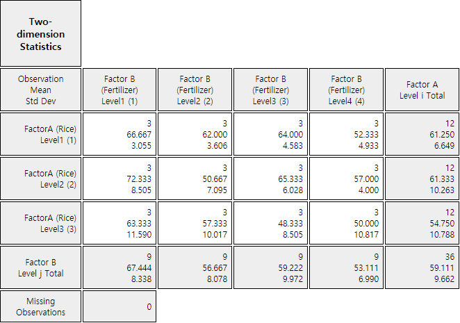

When data are obtained from repeated experiments at each factor level, the two-way ANOVA tests whether the population means of each level of factor A are the same (called the main effect test of the factor A) as the one-way ANOVA, or tests whether the population means of each level of factor B are the same (called the main effect test of the factor B). In addition, the two-way ANOVA tests whether the effect of one factor A is influenced by each level of the other factor B (called the interaction effect test). For example, in a chemical process, if the higher the pressure when the temperature is low, the greater the amount of products, and the lower the pressure when the temperature is high, the greater the amount of products, the interaction effect exists between the two factors of temperature and pressure. The interaction effect exists where the effects of one factor change with changes in the level of another factor.
Chapter 9. Testing Hypothesis for Several Population Means
9.3 Analysis of Variance for Two Factors
[presentation] [video]
When data are obtained from repeated experiments at each factor level, the two-way ANOVA tests whether the population means of each level of factor A (called the main effect test of the factor A) are the same as the one-way ANOVA, or tests whether the population means of each level of factor B are the same (called the main effect test of the factor B).
The two-way ANOVA also tests whether the effect of one factor A is influenced by each level of the other factor B (called the interaction effect test).
| Fertilizer | Rice type 1 | Rice type 2 | Rice type 3 |
|---|---|---|---|
| 1 | 64, 66, 70 | 72, 81, 64 | 74, 51, 65 |
| 2 | 65, 63, 58 | 57, 43, 52 | 47, 58, 67 |
| 3 | 59, 68, 65 | 66, 71, 59 | 58, 45, 42 |
| 4 | 58, 50, 49 | 57, 61, 53 | 53, 59, 38 |
Answer
| (Factor B) Fertilizer |
(Factor A) Rice type 1 |
(Factor A) Rice type 2 |
(Factor A) Rice type 3 |
Row Average |
|---|---|---|---|---|
| 1 | \(\overline y_{11\cdot}\) = 66.7 | \(\overline y_{12\cdot}\) = 72.3 | \(\overline y_{13\cdot}\) = 63.3 | \(\overline y_{1\cdot\cdot}\) = 67.4 |
| 2 | \(\overline y_{21\cdot}\) = 62.0 | \(\overline y_{22\cdot}\) = 50.7 | \(\overline y_{23\cdot}\) = 57.3 | \(\overline y_{2\cdot\cdot}\) = 56.7 |
| 3 | \(\overline y_{31\cdot}\) = 64.0 | \(\overline y_{32\cdot}\) = 65.3 | \(\overline y_{33\cdot}\) = 48.3 | \(\overline y_{3\cdot\cdot}\) = 59.2 |
| 4 | \(\overline y_{41\cdot}\) = 52.3 | \(\overline y_{42\cdot}\) = 57.0 | \(\overline y_{43\cdot}\) = 50.0 | \(\overline y_{4\cdot\cdot}\) = 53.1 |
| Column Average | \(\overline y_{\cdot1\cdot}\) = 61.3 | \(\overline y_{\cdot2\cdot}\) = 61.3 | \(\overline y_{\cdot3\cdot}\) = 54.8 | \(\overline y_{\cdot\cdot\cdot}\) = 59.1 |

<Figure 9.3.1> Data input for two-way ANOVA of 『eStat』
|

If the null hypothesis is rejected, we conclude that the main effect of rice types exists. In order to test the main effect of rice types, as in the one-way analysis of variance, the sum of squared distances from each average yield \({\overline y}_{\cdot j \cdot}\) of rice type to the overall average yield \({\overline y}_{\cdot \cdot \cdot}\).
\(\quad \small {SSA} = 12(61.3-{\overline y}_{\cdot \cdot \cdot})^2 + 12(61.3-{\overline y}_{\cdot \cdot \cdot})^2 + 12(54.8-{\overline y}_{\cdot \cdot \cdot})^2 \) = 342.39
where the weight of 12 of each sum of squares is the number of data for each rice type. Since there are 3 rice types, the degrees of freedom of \(\small SSA\) is (3-1) and we call the sum of squares \(\small SSA\) divided by (3-1), \(\frac{SSA}{(3-1)}\), is the mean squares of factor A, \(\small MSA\).
Testing the factor B, which is to test the main effect of fertilizer types, implies to test the following null hypothesis.
\(\quad \small H_0\) : The average yields of the four fertilizer types are the same.
If the null hypothesis is rejected, we conclude that the main effect of fertilizer types exists. In order to test the main effect of fertilizer types, as in the one-way analysis of variance, the sum of squared distances from each average yield \({\overline y}_{i \cdot \cdot}\) of fertilizer type \(i\) to the overall average yield \({\overline y}_{\cdot \cdot \cdot}\),
\(\quad \small {SSB} = 9(67.4 - {\overline y}_{\cdot \cdot \cdot})^2 + 9(56.7 - {\overline y}_{\cdot \cdot \cdot} )^2 + 9(59.2 - {\overline y}_{\cdot \cdot \cdot})^2 + 9(53.1 - {\overline y}_{\cdot \cdot \cdot})^2 \) = 1002.89
where the weight of 9 of each sum of squares is the number of data for each fertilizer type. Since there are 4 fertilizer types, the degrees of freedom of \(\small SSB\) is (4-1) and we call the sum of squares \(\small SSB\) divided by (4-1), \(\frac{SSB}{(4-1)}\), is the mean squares of factor B, \(\small MSB\).
Testing the interaction effect of rice and fertilizer (represented as factor AB) is to test the following null hypothesis.
\(\quad \small H_0\) : There is no interaction effect between rice type and fertilizer type.
If the null hypothesis is rejected, we conclude that there is an interaction effect between rice types and fertilizer types. In order to test the interaction effect, the sum of squared distances from each average yield \({\overline y}_{ij \cdot}\) subtracting the average yield \({\overline y}_{i \cdot \cdot}\) of fertilizer type \(i\), subtracting the average yield \({\overline y}_{\cdot j \cdot}\) of rice type \(j\), adding the overall average yield \({\overline y}_{\cdot \cdot \cdot}\).
\(\quad\) \(\small {SSAB} = 3(66.7- {\overline y}_{1 \cdot \cdot} - {\overline y}_{\cdot 1 \cdot} +{\overline y}_{\cdot \cdot \cdot})^2 + 3(72.3- {\overline y}_{1 \cdot \cdot} -{\overline y}_{\cdot 2 \cdot} +{\overline y}_{\cdot \cdot \cdot})^2 + 3(63.3- {\overline y}_{1 \cdot \cdot} - {\overline y}_{\cdot 3 \cdot} +{\overline y}_{\cdot \cdot \cdot})^2 \)
\(\qquad\) \(\small + 3(62.0- {\overline y}_{2 \cdot \cdot} - {\overline y}_{\cdot 1 \cdot} +{\overline y}_{\cdot \cdot \cdot})^2 + 3(50.7- {\overline y}_{2 \cdot \cdot} - {\overline y}_{\cdot 2 \cdot} +{\overline y}_{\cdot \cdot \cdot})^2 + 3(57.3- {\overline y}_{2 \cdot \cdot} -{\overline y}_{\cdot 3 \cdot} +{\overline y}_{\cdot \cdot \cdot})^2 \)
\(\qquad\) \(\small + 3(64.0- {\overline y}_{3 \cdot \cdot} - {\overline y}_{\cdot 1 \cdot} +{\overline y}_{\cdot \cdot \cdot})^2 + 3(65.3- {\overline y}_{3 \cdot \cdot} - {\overline y}_{\cdot 2 \cdot} +{\overline y}_{\cdot \cdot \cdot})^2 + 3(48.3- {\overline y}_{3 \cdot \cdot} - {\overline y}_{\cdot 3 \cdot} +{\overline y}_{\cdot \cdot \cdot})^2 \)
\(\qquad\) \(\small + 3(52.3- {\overline y}_{4 \cdot \cdot} - {\overline y}_{\cdot 1 \cdot} +{\overline y}_{\cdot \cdot \cdot})^2 + 3(57.0- {\overline y}_{4 \cdot \cdot} - {\overline y}_{\cdot 2 \cdot} +{\overline y}_{\cdot \cdot \cdot})^2 + 3(50.0- {\overline y}_{4 \cdot \cdot} -{\overline y}_{\cdot 3 \cdot} +{\overline y}_{\cdot \cdot \cdot})^2 \)
where the weight of 3 of each sum of squares is the number of data for each cell of rice and fertilizer type. The degrees of freedom of \(\small SSAB\) is (3-1)(4-1) and we call the sum of squares \(\small SSAB\) divided by (3-1)(4-1), \(\small \frac {SSAB}{(3-1)(4-1)}\) is the mean squares of interaction AB, \(\small MSAB\).
It is not possible to test each effect immediately using these sum of squares, but the error sum of squares should be calculated. In order to calculate the error sum of squares, first we calculate the total sum of squares which is the sum of the squared distances from each data to the overall average.
\(\quad \small {SST} = ( 64 -{\overline y}_{\cdot \cdot \cdot})^2 + ( 66 -{\overline y}_{\cdot \cdot \cdot})^2 + ( 70 -{\overline y}_{\cdot \cdot \cdot})^2 + \cdots + ( 53 -{\overline y}_{\cdot \cdot \cdot})^2 + ( 59 -{\overline y}_{\cdot \cdot \cdot})^2 + ( 38 -{\overline y}_{\cdot \cdot \cdot})^2 = 3267.56 \)
This total sum of squares can be proven mathematically to be the sum of the other sums of squares as follows:
\(\quad \small {SST} = SSA + SSB + SSAB + SSE \)
Therefore, the error sum of squares can be calculated as follows:
\(\quad \small {SSE} = SST - (SSA + SSB + SSAB) \)
If the yields on each rice type or fertilizer type are assumed to be normal and the variances are the same, the statistic which divides the each mean squares by the error mean squares follows \(F\) distribution. Therefore, the main effects and interaction effect can be tested using \(F\) distributions. If the interaction effect is separated, we test them first. Testing results using the 5% significance level are as follows:
① Testing of the interaction effect on rice and fertilizer:
\(\qquad \small F_0 = \frac {MSAB}{MSE} = \frac { \frac{SSAB}{(3-1)(4-1)} } {\frac {SSE}{24}} \) = 1.77
\(\qquad \small F_{6,24; 0.05} \) = 2.51
② Testing of the main effect on rice types (Factor A):
\(\qquad \small F_0 = \frac {MSA}{MSE} = \frac { \frac{SSA}{(3-1)} } {\frac {SSE}{24}} \) = 3.08
\(\qquad \small F_{2,24; 0.05} \) = 3.40
③ Testing of the main effect on fertilizer types (Factor B):
\(\qquad \small F_0 = \frac {MSB}{MSE} = \frac { \frac{SSB}{(4-1)} } {\frac {SSE}{24}} \) = 6.02
\(\qquad \small F_{3,24; 0.05} \) = 3.01
The result of the two-way analysis of variances is as Table 9.3.3.
| Factor | Sum of Squares | Degree of freedom | Mean Squares | F value | p value |
|---|---|---|---|---|---|
| Rice Type | 342.3889 | 2 | 171.1944 | 3.0815 | 0.0644 |
| Fertilizer Type | 1002.8889 | 3 | 334.2963 | 6.0173 | 0.0033 |
| Interaction | 588.9444 | 6 | 98.1574 | 1.7668 | 0.1488 |
| Error | 1333.3333 | 24 | 55.5556 | ||
| Total | 3267.5556 | 35 |


\(\quad \alpha_i\) : effect of \(i^{th}\) level of factor A
\(\quad \beta_j\) : effect of \(j^{th}\) level of factor B
\(\quad \gamma_{ij}\) : interaction effect of \(i^{th}\) level of factor A and \(j^{th}\) level of factor B
\(\quad \epsilon_{ijk}\) : error terms which are independent and follow N(0,\(\sigma^{2}\)).
Assume that experiments are repeated \(r\) times equally at the \(i^{th}\) level of factor A and \(j^{th}\) level of factor B. Therefore, the total number of observations is \(n = abr\).
The total sum of squared distances from each observation to the total mean can be partitioned as following sum of squares similar to the one-way analysis of variance.
Total sum of squares :
SST = \(\sum_{i=1}^{a} \sum_{j=1}^{b} \sum_{k=1}^{r}( Y_{ijk} - {\overline Y}_{\cdot \cdot \cdot} )^2 \) ,
degrees of freedom ; \(n - 1\)
Factor A sum of squares :
SSA = \(br \sum_{i=1}^{a} ( {\overline Y}_{i \cdot \cdot} - {\overline Y}_{\cdot \cdot \cdot} )^2 \) ,
degrees of freedom ; \(a - 1\)
Factor B sum of squares :
SSB = \(ar \sum_{j=1}^{b} ( {\overline Y}_{\cdot j \cdot} - {\overline Y}_{\cdot \cdot \cdot} )^2 \) ,
degrees of freedom ; \(b - 1\)
Interaction sum of squares :
SSAB = \(r \sum_{i=1}^{a} \sum_{j=1}^{b} ( {\overline Y}_{ij \cdot} - {\overline Y}_{i \cdot \cdot} - {\overline Y}_{\cdot j \cdot} + {\overline Y}_{\cdot \cdot \cdot} )^2 \) ,
degrees of freedom ; \((a - 1)(b - 1)\)
Error sum of squares :
SSE = \(\sum_{i=1}^{a} \sum_{j=1}^{b} \sum_{k=1}^{r} ( {Y}_{ijk} - {\overline Y}_{ij \cdot})^2 \) ,
degrees of freedom ; \(n-ab\)
Sum of Squares: \(\qquad SST = SSA + SSB + SSAB + SSE\)
degrees of freedom: \((n-1) = (a-1) + (b-1) + (a-1)(b-1) + (n-ab)\)
| Factor | Sum of Squares | Degree of freedom | Mean Squares | F value |
|---|---|---|---|---|
| Factor A | SSA | \(a-1\) | MSA=\(\frac{SSA}{a-1}\) | \(F_1 = \frac{MSA}{MSE}\) |
| Factor B | SSB | \(b-1\) | MSB=\(\frac{SSB}{b-1}\) | \(F_2 = \frac{MSB}{MSE}\) |
| Interaction | SSAB | \((a-1)(b-1)\) | MSAB=\(\frac{SSAB}{(a-1)(b-1)}\) | \(F_3 = \frac{MSAB}{MSE}\) |
| Error | SSE | \(n-ab\) | MSE=\(\frac{SSE}{(n-ab)}\) | |
| Total | SST | \(n-1\) |
If there is no repeated observation at each level combination of two factors, the interaction effect can not be estimated and the row of interaction factor is deleted from the above two-way ANOVA table. In this case, the analysis of variance table is the same as the randomized block design as Table 9.2.3.
1) Test for the interaction effect:
If \(\frac{MSAB}{MSE} \gt F_{(a-1)(b-1),n-ab; α} \), then reject \(H_0\)
2) Test for the main effect of factor A:
If \(\frac{MSA}{MSE} \gt F_{(a-1),n-ab; α} \), then reject \(H_0\)
3) Test for the main effect of factor B:
If \(\frac{MSB}{MSE} \gt F_{(b-1),n-ab; α} \), then reject \(H_0\)
(『eStat』 calculates the \(p\)-value for each of these tests and tests them using it. That is, for each test, if the \(p\)-value is less than the significance level, the null hypothesis \(H_0\) is rejected.)
If the test for interaction effect is not significant, a test of the main effects of each factor can be performed to test significant differences between levels. However, if there is a significant interaction effect, the test for the main effects of each factor is meaningless, so an analysis should be made on which level combinations of factors show differences in the means.
If you conclude that significant differences between the levels of a factor as in the one-way analysis of variance exist there, you can compare confidence intervals at each level to see which level of the differences appears. And a residual analysis is necessary to investigate the validity of the assumption.
|
Practice 9.3.1
The result of an experiment at a production plant of an electronic component to investigate the
life of the product due to changes in temperature (\(T_1 , T_2\)) and humidity (\(H_1 , H_2\))
is as follows. Analyze data using the analysis of variance with 5% significance level.
[Ex] ⇨ eBook ⇨ PR090301_LifeByTemperatureHumidity.csv
|
Even in the two-way analysis of variance, obtaining sample data at each level of two factors in engineering or in agriculture can be influenced by other factors and should be careful in sampling. In order to accurately identify the differences that may exist between each level of a factor, it is advisable to make as few as possible influences from other factors. One of the most commonly used methods of doing this is completely randomized design which makes the entire experiments random. There are many other experimental design methods, and for more information, refer to the references to the experimental design of several factors.
Multiple Choice Exercise
*** Choose one answer and click [Submit] button
9.12 What is called the effect of a factor A that varies depending on the level of the factor B?